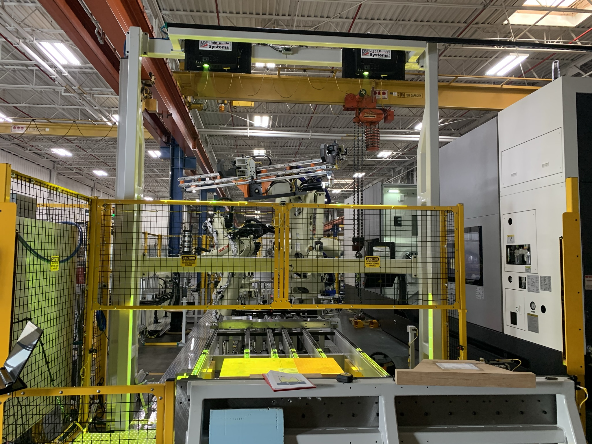
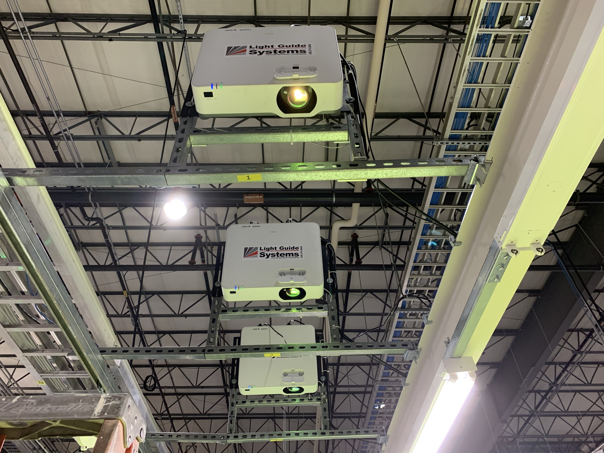
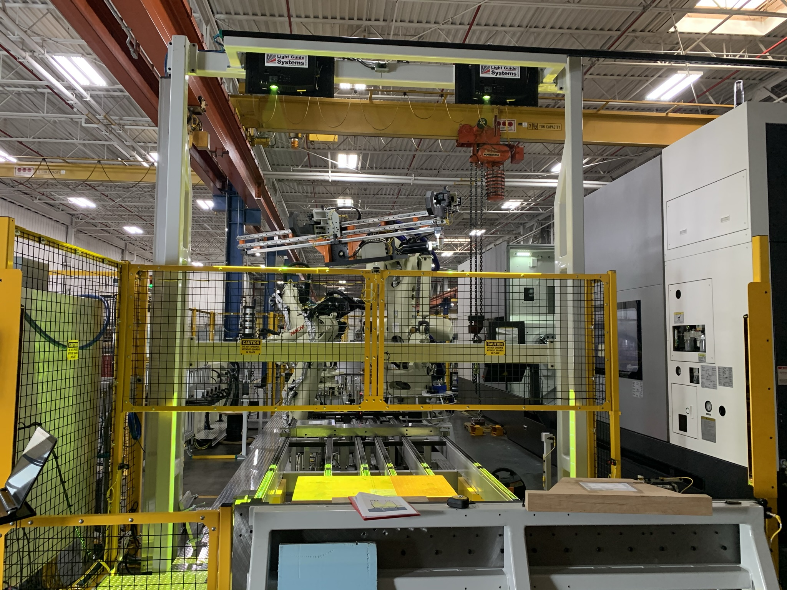
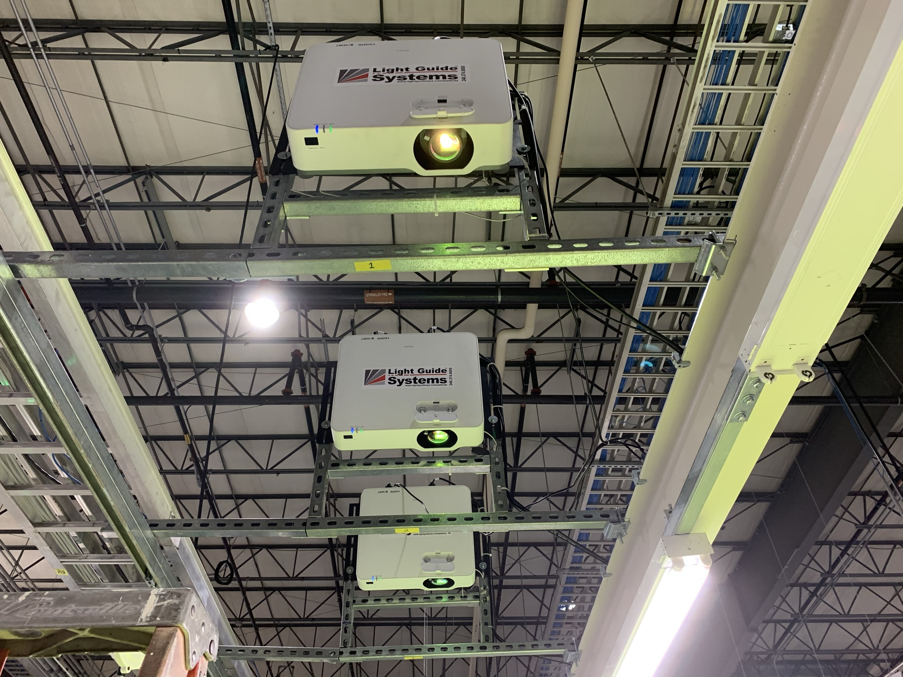

AR-Driven Manufacturing Optimization
 



Project Overview
Design, develop and deploy augmented reality solutions that increased manufacturing throughput while reducing defects. Each project is a custom solution that integrates with SQL databases, MES platforms, PLCs and other existing factory infrastructure. The solution provides real-time visual guidance to factory workers, which decreases cognitive load resulting in less errors and faster cycle time.
I have personally developed and deployed these augmented reality solutions in several industries including:
- Automotive
- Aerospace & Defense
- Electronics
- Warehouse & Logistics
- Diverse Manufacturing
- Medical
- Food & Beverage
Technical Implementation
Key Features
Real-time AR Guidance: Workers receive step-by-step visual instructions overlaid directly onto their work environment using Microsoft HoloLens devices.
Quality Control Integration: Azure Kinect sensors automatically detect defects and guide workers through correction procedures, reducing quality issues by 60%.
Data-Driven Insights: The system collects performance metrics and integrates with existing MES platforms to provide actionable insights for continuous improvement.
Results & Impact
The implementation delivered measurable improvements across multiple key performance indicators:
- Increase in manufacturing throughput
- Reduction in quality defects
- Decrease in worker training time
- Improvement in overall equipment effectiveness (OEE)
The solution has been successfully deployed across three manufacturing facilities and is currently being scaled to additional locations.